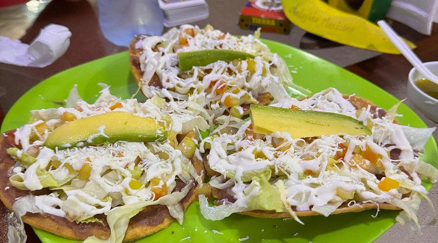

Antojitos "AVE"


Aquí vendemos antojitos hechos en casa, ricos y económicos
Los antojitos mexicanos son preparaciones rápidas, principalmente a base de maíz, que definen la comida callejera en México. Los clásicos incluyen empanadas, salbutes, panuchos,tostadas y tostadas, acompañados de salsas, queso, crema y lechuga. Se caracterizan por su alto sabor y tradición regional.
Los antojitos mexicanos tienen sus raíces en la época prehispánica, cuando las culturas indígenas ya preparaban platillos básicos con ingredientes autóctonos como maíz, frijol y chile. Con la llegada de los españoles, se incorporaron nuevos ingredientes y técnicas culinarias que enriquecieron la gastronomía.
Loa antojitos "AVE" fue fundado hace aproximadamente 5 o 6 años ya que empezaron por hacer encargos los dias que se los pidieran y ahora es un negocio que se mantiene abierto y sirviendo los ricos antojitos, como sabemos todos los mexicanos amamos los antojitos, esto nos hace consumir antojitos "AVE" .
Ver menú
Contacto